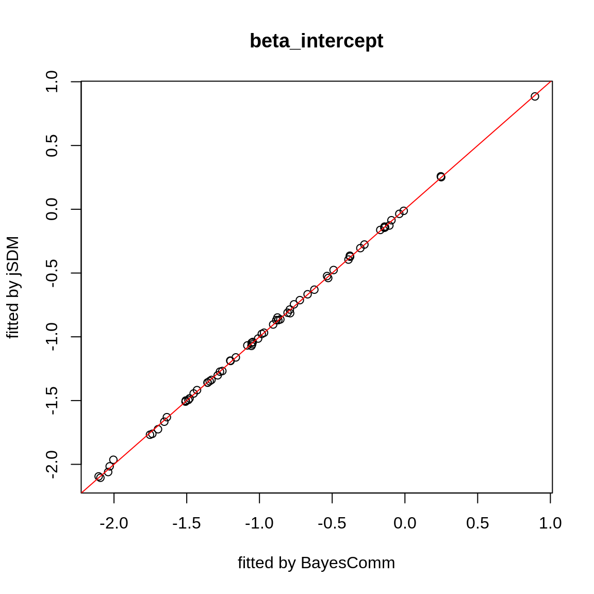
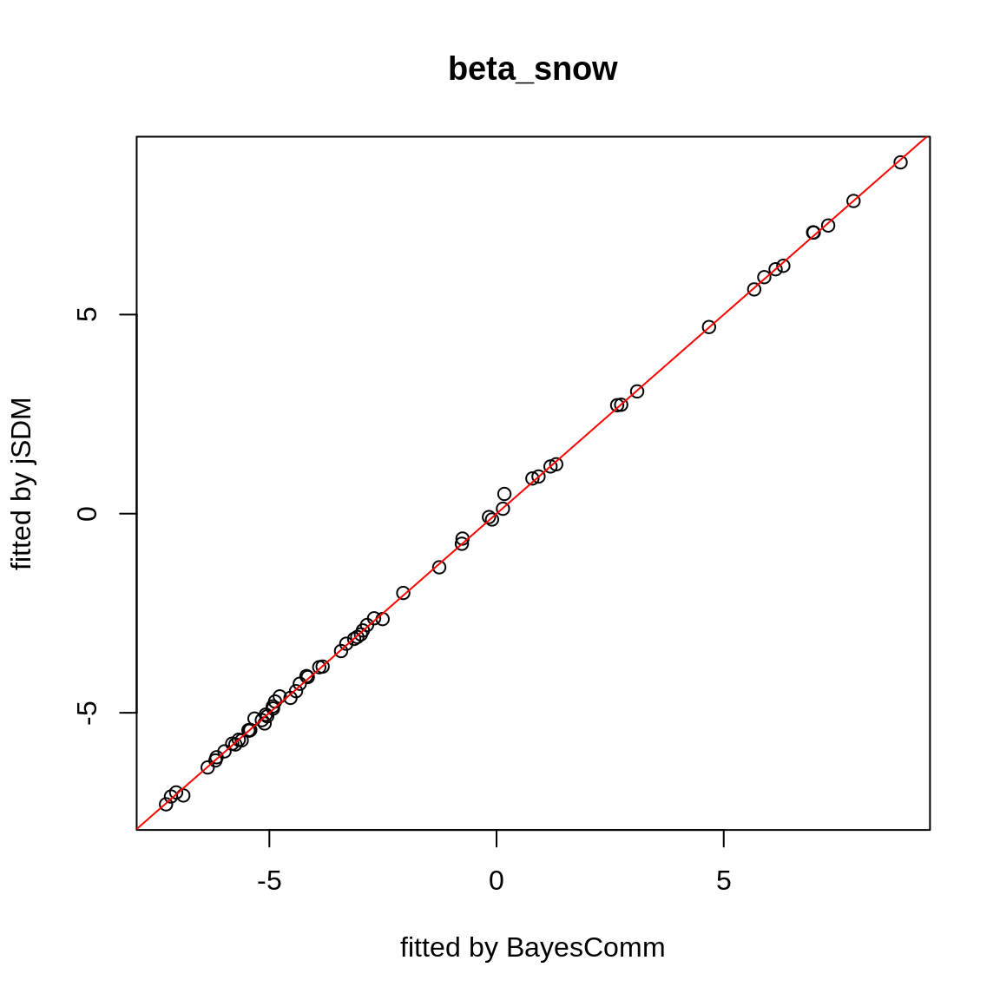
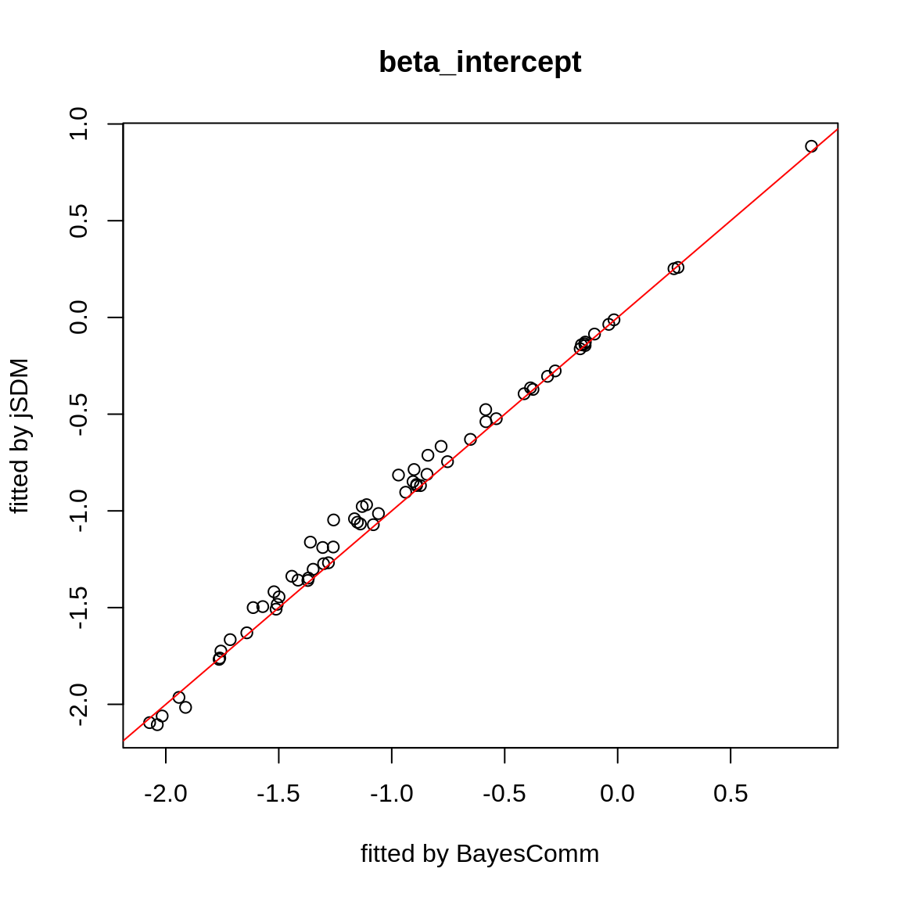
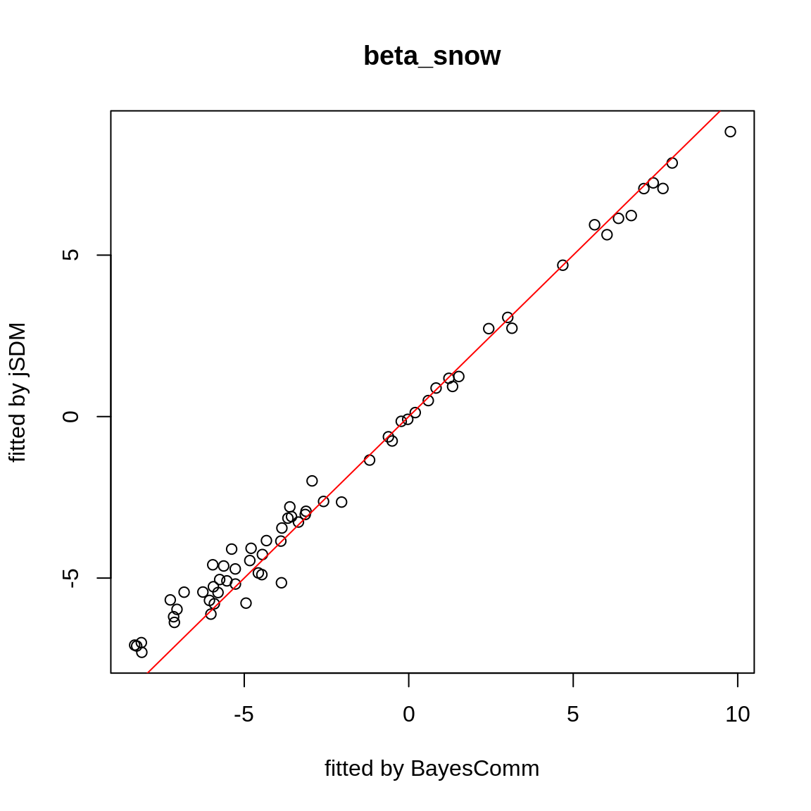
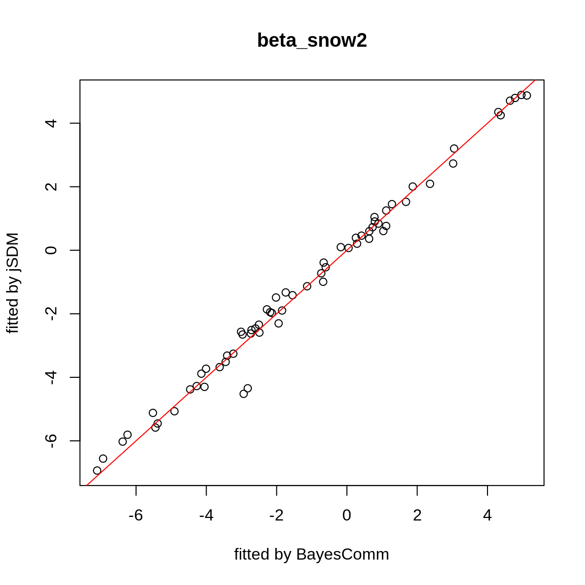
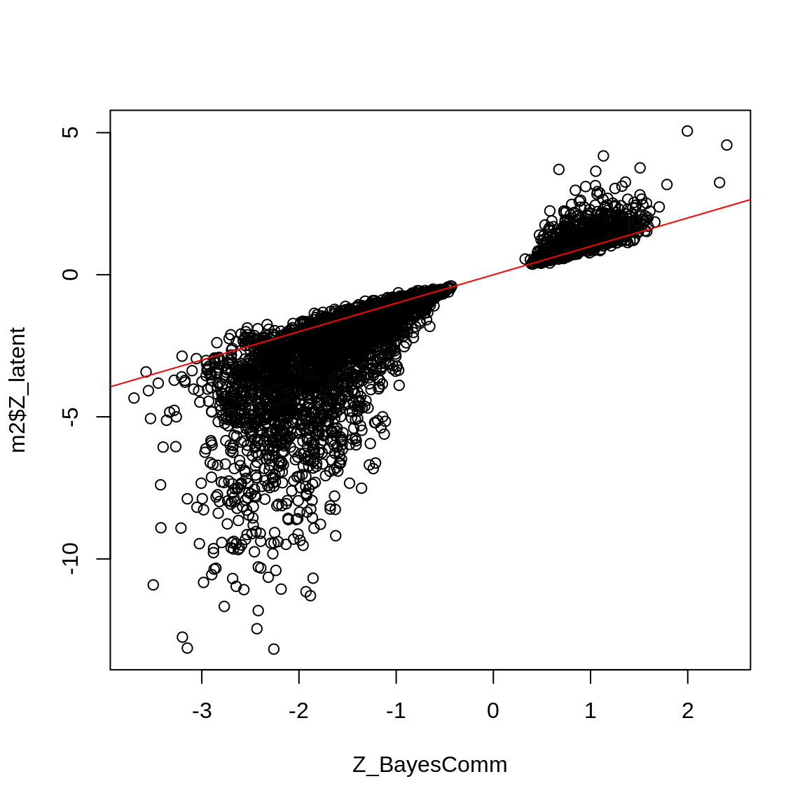
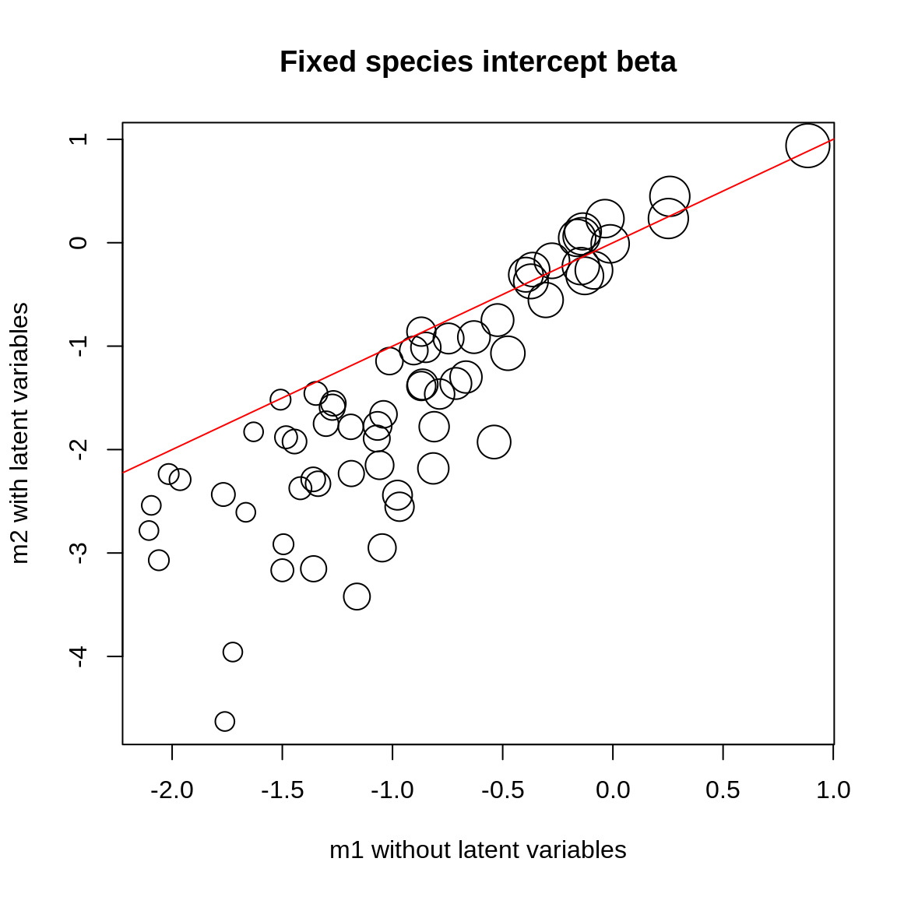
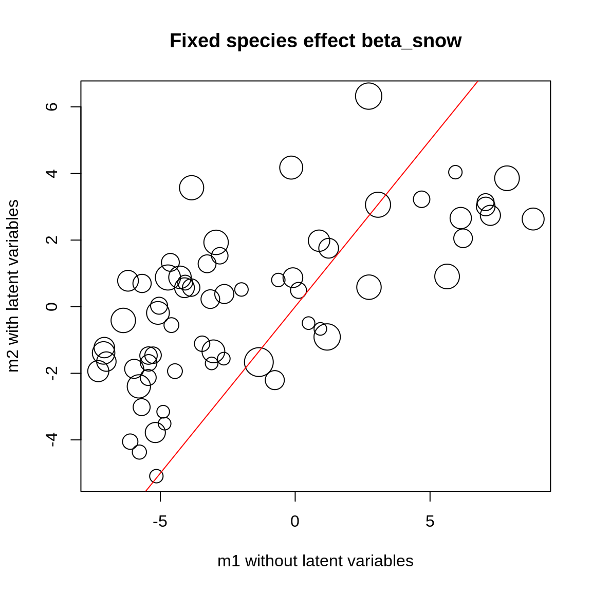
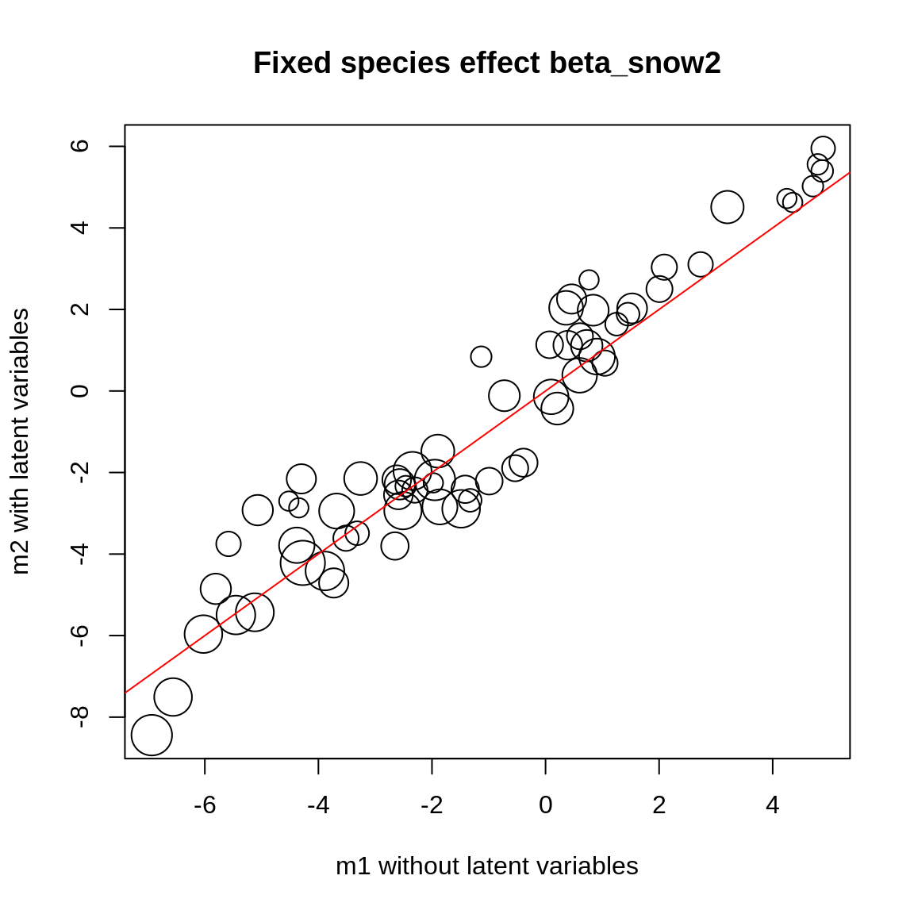
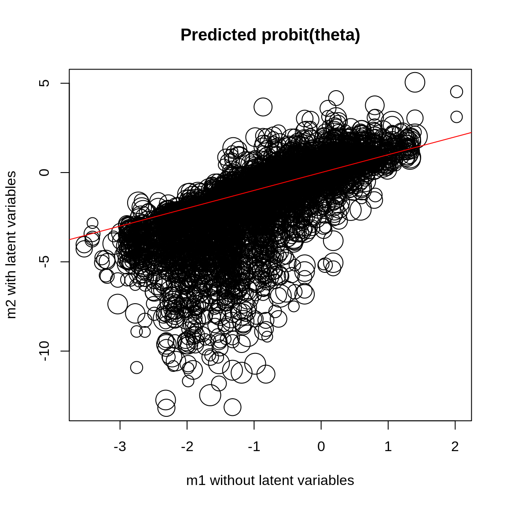

1 Dataset
1.1 Presence-absence of alpine plants

Figure 1.1: Alpine plants (Choler 2005).
We consider alpine plants in Aravo (Valloire), south east France (Choler 2005). The data are available from the R package ade4 (Dray & Dufour 2007). The original dataset includes abundance data for 82 species in 75 sites.
library(jSDM) #> ## #> ## jSDM R package #> ## For joint species distribution models #> ## https://ecology.ghislainv.fr/jSDM #> ## data(aravo) aravo$spe[1:5, 1:5] #> Agro.rupe Alop.alpi Anth.nipp Heli.sede Aven.vers #> AR07 0 0 0 0 0 #> AR71 0 0 0 0 0 #> AR26 3 0 1 0 1 #> AR54 0 0 0 2 0 #> AR60 0 0 0 0 0 head(aravo$env) #> Aspect Slope Form PhysD ZoogD Snow #> AR07 7 2 1 50 no 140 #> AR71 1 35 3 40 no 140 #> AR26 5 0 3 20 no 140 #> AR54 9 30 3 80 no 140 #> AR60 9 5 1 80 no 140 #> AR70 1 30 3 40 no 140
We transform abundance into presence-absence data and remove species with less than 5 presences. We also look at the number of observations per site.
# Transform abundance into presence-absence pres_data <- aravo$spe pres_data[pres_data > 0] <- 1 # Remove species with less than 5 presences rare_sp <- which(apply(pres_data, 2, sum) < 5) pres_data <- pres_data[, -rare_sp] # Number of sites and species nsite <- dim(pres_data)[1] nsite #> [1] 75 nsp <- dim(pres_data)[2] nsp #> [1] 65 # Number of observations per site nobs_site <- apply(pres_data, 1, sum) nobs_site #> AR07 AR71 AR26 AR54 AR60 AR70 AR22 AR25 AR27 AR28 AR72 AR01 AR23 AR08 AR12 AR13 #> 12 12 25 16 11 18 28 15 22 24 12 20 21 27 24 22 #> AR61 AR49 AR50 AR52 AR29 AR30 AR51 AR05 AR53 AR06 AR16 AR56 AR75 AR69 AR15 AR63 #> 20 20 21 20 27 24 25 23 12 28 17 12 16 28 20 25 #> AR74 AR64 AR65 AR66 AR67 AR68 AR11 AR32 AR02 AR10 AR31 AR39 AR40 AR57 AR58 AR62 #> 9 7 6 10 11 14 20 25 20 15 14 16 18 13 15 17 #> AR24 AR37 AR38 AR03 AR14 AR19 AR20 AR36 AR42 AR44 AR34 AR35 AR46 AR47 AR48 AR41 #> 5 7 11 12 13 6 14 9 12 10 10 13 10 15 15 18 #> AR43 AR45 AR21 AR73 AR04 AR09 AR17 AR18 AR33 AR55 AR59 #> 13 11 23 20 25 14 17 17 11 20 17 # Number of observations per species nobs_sp <- apply(pres_data, 2, sum) nobs_sp #> Agro.rupe Alop.alpi Anth.nipp Aven.vers Care.rosa Care.foet Care.parv Care.rupe #> 29 37 17 15 28 20 12 5 #> Care.semp Fest.quad Fest.viol Kobr.myos Luzu.lute Poa.alpi Poa.supi Sesl.caer #> 12 11 13 23 8 59 6 7 #> Alch.pent Alch.glau Alch.vulg Andr.brig Ante.carp Camp.sche Card.alpi Cera.stri #> 26 14 5 17 17 36 16 29 #> Cera.cera Leuc.alpi Cirs.acau Drab.aizo Erig.unif Gent.camp Gent.acau Gent.vern #> 12 30 5 13 22 14 8 28 #> Geum.mont Omal.supi Andr.vita Hier.pili Homo.alpi Leon.pyre Ligu.muto Lloy.sero #> 45 37 16 11 6 39 20 5 #> Minu.sedo Minu.vern Plan.alpi Poly.vivi Pote.aure Pote.cran Puls.vern Ranu.kuep #> 39 10 36 31 36 11 18 19 #> Sagi.glab Sali.herb Saxi.pani Sedu.alpe Semp.mont Sene.inca Sibb.proc Sile.acau #> 24 24 9 19 21 10 45 8 #> Vero.alpi Vero.bell Myos.alpe Tara.alpi Oxyt.camp Oxyt.lapp Lotu.alpi Trif.alpi #> 16 35 19 11 5 6 9 6 #> Trif.thal #> 5
1.2 Environmental variables
The environmental variables are:
- Aspect: Relative south aspect (opposite of the sine of aspect with flat coded 0).
- Slope: Slope inclination (degrees).
- Form: Microtopographic landform index: 1 (convexity); 2 (convex slope); 3 (right slope); 4 (concave slope); 5 (concavity).
- Snow: Mean snowmelt date (Julian day) averaged over 1997-1999.
- PhysD: Physical disturbance, i.e., percentage of unvegetated soil due to physical processes.
- ZoogD: Zoogenic disturbance, i.e., quantity of unvegetated soil due to marmot activity: no; some; high.
As a first approach, we just select the “Snow” variable considering a quadratic orthogonal polynomial.
p <- poly(aravo$env$Snow, 2) env_data <- data.frame(cbind(1, p)) names(env_data) <- c("int", "snow", "snow2") head(env_data) #> int snow snow2 #> 1 1 -0.1571577 0.1587642 #> 2 1 -0.1571577 0.1587642 #> 3 1 -0.1571577 0.1587642 #> 4 1 -0.1571577 0.1587642 #> 5 1 -0.1571577 0.1587642 #> 6 1 -0.1571577 0.1587642 # Number of environmental variables plus intercept np <- ncol(env_data)
2 Fitting species distribution models
2.1 BayesComm
2.1.1 Model without latent variables
# R is diagonal library(BayesComm) T1 <- Sys.time() mod_BayesComm <- BayesComm::BC(Y=as.matrix(pres_data), X=as.matrix(env_data[,-1]), model="environment", its=50000, thin=25, burn=25000) # Estimates beta_est_bayescomm <- data.frame(sp=names(pres_data), intercept=NA, snow=NA, snow2=NA) for (j in 1:nsp) { beta_est_bayescomm[j, 2:4] <- as.numeric(summary(mod_BayesComm, chain=paste0("B$", names(pres_data)[j]))$statistics[, "Mean"]) } T2 <- Sys.time() T_BayesComm <- difftime(T2,T1) save(beta_est_bayescomm, T_BayesComm, file="SDM_JSDM_files/BayesComm.rda")
library(BayesComm) par(mfrow=c(1,1), oma=c(0,0,2,0)) plot(mod_BayesComm, chain="B$Agro.rupe") title(main=paste0("species ", aravo$spe.names["Agro.rupe"]), outer=TRUE)

2.1.2 Model with latent variables
T1 <- Sys.time() mod_BayesComm_lv <- BayesComm::BC(Y=as.matrix(pres_data), X=as.matrix(env_data[,-1]), model="full", its=50000, thin=25, burn=25000) # Estimates beta_est_bayescomm_lv <- data.frame(sp=names(pres_data), intercept=NA, snow=NA, snow2=NA) for (j in 1:nsp) { beta_est_bayescomm_lv[j, 2:4] <- as.numeric(summary(mod_BayesComm_lv, chain=paste0("B$", names(pres_data)[j]))$statistics[, "Mean"]) } Z_BayesComm <- apply(mod_BayesComm_lv$trace$z,c(2,3), mean) T2 <- Sys.time() T_BayesComm_lv <- difftime(T2,T1) save(beta_est_bayescomm_lv, Z_BayesComm, T_BayesComm_lv, file="SDM_JSDM_files/BayesComm_lv.rda")
library(BayesComm) par(mfrow=c(1,1), oma=c(0,0,2,0)) plot(mod_BayesComm_lv, chain="B$Agro.rupe") title(main=paste0("species ", aravo$spe.names["Agro.rupe"]), outer=TRUE)

2.2 Binomial model for presence-absence data
We consider a latent variable model (LVM) to account for species co-occurrence on all sites (Warton et al. 2015).
\[y_{ij} \sim \mathcal{B}ernoulli(\theta_{ij})\]
\[ \mathrm{g}(\theta_{ij}) =\alpha_i + X_i\beta_j + W_i\lambda_j \]
- \(\mathrm{g}(\cdot)\): Link function (eg. logit or probit).
- \(\alpha_i\): Site random effect with \(\alpha_i \sim \mathcal{N}(0, V_{\alpha})\). Corresponds to a mean suitability for site \(i\).
- \(X_i\): Vector of explanatory variables for site \(i\) (including intercept).
- \(\beta_j\): Effects of the explanatory variables on the probability of presence of species \(j\).
- \(W_i\): Vector of random latent variables for site \(i\). \(W_i \sim N(0, 1)\). The number of latent variables must be fixed by the user (default to 2).
- \(\lambda_j\): Effects of the latent variables on the probability of presence of species \(j\). Also known as “factor loadings” (Warton et al. 2015).
This model is equivalent to a multivariate GLMM \(\mathrm{g}(\theta_{ij}) =\alpha_i + X_i.\beta_j + u_{ij}\), where \(u_{ij} \sim \mathcal{N}(0, \Sigma)\) with the constraint that the variance-covariance matrix \(\Sigma = \Lambda \Lambda^{\prime}\), where \(\Lambda\) is the full matrix of factor loadings, with the \(\lambda_j\) as its columns.
2.3 Binomial model with probit link
In a first step, we consider binomial models with a probit link. We compare models without and with latent variables and which may or may not include a random site effect.
2.3.1 Model without latent variables
We estimate the model parameters with the function jSDM_binomial_probit_block().
## Load libraries require(doParallel) require(foreach) ## Make a cluster for parallel MCMCs nchains <- 2 ncores <- nchains ## One core for each MCMC chains clust <- makeCluster(ncores) registerDoParallel(clust) # Starting values for two chains beta_start <- c(1, -1) #formatting of starting parameters generated by the function # Seeds seed_mcmc <- c(1234, 4321)
library(jSDM) # Model with foreach and doPar call mod_probit <- foreach (i = 1:nchains) %dopar% { # Infering model parameters mod <- jSDM::jSDM_binomial_probit_block( # Iterations mcmc = 25000, thin = 25, burnin = 25000, # Data presence_site_sp = pres_data, site_data = env_data[,-1], site_suitability=~., # Priors mu_beta = 0, V_beta = 10, # Starting values beta_start = beta_start[i], # Other seed = seed_mcmc[i], verbose = 1 ) return(mod) } # Stop cluster stopCluster(clust) save(mod_probit, file="SDM_JSDM_files/mod_probit.rda")
load(file="SDM_JSDM_files/mod_probit.rda") # Output length(mod_probit) #> [1] 2 m1 <- mod_probit[[1]] str(m1, max.level = 1) #> List of 5 #> $ mcmc.Deviance : 'mcmc' num [1:1000, 1] 3927 3882 3948 3920 3929 ... #> ..- attr(*, "mcpar")= num [1:3] 25001 49976 25 #> ..- attr(*, "dimnames")=List of 2 #> $ mcmc.sp :List of 65 #> $ Z_latent : num [1:75, 1:65] -0.98 -1.022 0.682 -1.001 -0.999 ... #> $ probit_theta_pred: num [1:75, 1:65] -0.48 -0.48 -0.48 -0.48 -0.48 ... #> $ model_spec :List of 15 #> - attr(*, "class")= chr "jSDM"
We evaluate the convergence of the MCMC output in which two parallel chains are run with starting values that are overdispersed relative to the posterior distribution. Convergence is diagnosed when the chains have ‘forgotten’ their initial values, and the output from all chains is indistinguishable. If the convergence diagnostic gives values substantially above 1, its indicates lack of convergence.
require(coda) #> Loading required package: coda arr2mcmc <- function(x) { return(mcmc(as.data.frame(x))) } # MCMC lists mcmc_list_beta <- mcmc.list(lapply(lapply(mod_probit,"[[","mcmc.sp"), arr2mcmc)) mcmc_list_deviance <- mcmc.list(lapply(lapply(mod_probit,"[[","mcmc.Deviance"), arr2mcmc)) # psrf gelman indice psrf_beta <- gelman.diag(mcmc_list_beta)$mpsrf # gelman indice cat("psrf_beta:", psrf_beta, "\n") #> psrf_beta: 1.238203
beta_m1 <- lapply(m1$mcmc.sp, colMeans) probit_theta_m1 <- m1$probit_theta_pred deviance_m1 <- mean(m1$mcmc.Deviance)
Comparison with BayesComm
load("SDM_JSDM_files/BayesComm.rda") beta_est_m1 <- data.frame(matrix(unlist(beta_m1), ncol=3, byrow=T)) names(beta_est_m1) <- c("intercept","snow","snow2") beta_est_m1$sp <- names(pres_data) # Intercept plot(beta_est_bayescomm$intercept, beta_est_m1$intercept, main="beta_intercept", xlab="fitted by BayesComm", ylab="fitted by jSDM") abline(a=0, b=1, col="red")

# Snow plot(beta_est_bayescomm$snow, beta_est_m1$snow, main="beta_snow", xlab="fitted by BayesComm", ylab="fitted by jSDM") abline(a=0, b=1, col="red")

2.3.2 Model with latent variables
library(parallel) library(doParallel) ## Make a cluster for parallel MCMCs nchains <- 2 ncores <- nchains ## One core for each MCMC chains clust <- makeCluster(ncores) registerDoParallel(clust) # Number of latent variables nl <- 2 # Starting parameters lambda_start <- c(-1, 1) beta_start <- c(-1,1) W_start <- c(0.001,-0.001) #formatting of starting parameters #and constraints on lambda generated by the function # Seeds seed_mcmc <- c(1234, 4321)
# Model mod_probit_lv <- foreach (i = 1:nchains) %dopar% { # Infering model parameters mod <- jSDM::jSDM_binomial_probit_block( # Iterations burnin=25000, mcmc=25000, thin=25, # Data presence_site_sp=pres_data, site_data = env_data[,-1], site_suitability = ~., # Model specification n_latent=2, site_effect="none", # Priors V_beta = 10, mu_beta = 0, mu_lambda = 0, V_lambda= 10, # Starting values beta_start = beta_start[i], lambda_start = lambda_start[i], W_start = W_start[i], # Other seed = seed_mcmc[i], verbose = 1 ) return(mod) } # Stop cluster stopCluster(clust) save(mod_probit_lv, file="SDM_JSDM_files/mod_probit_lv.rda")
load(file="SDM_JSDM_files/mod_probit_lv.rda") # Output m2 <- mod_probit_lv[[1]] str(m2, max.level = 1) #> List of 6 #> $ mcmc.Deviance : 'mcmc' num [1:1000, 1] 2974 2990 2962 2929 2991 ... #> ..- attr(*, "mcpar")= num [1:3] 25001 49976 25 #> ..- attr(*, "dimnames")=List of 2 #> $ mcmc.sp :List of 65 #> $ mcmc.latent :List of 2 #> $ Z_latent : num [1:75, 1:65] -1.118 -0.957 0.56 -0.986 -1.3 ... #> $ probit_theta_pred: num [1:75, 1:65] -0.623 -0.317 -0.836 -0.368 -0.97 ... #> $ model_spec :List of 20 #> - attr(*, "class")= chr "jSDM"
#> psrf_lv: 1.372882
#> psrf_beta: 1.016833param_m2 <- lapply(m2$mcmc.sp,colMeans) probit_theta_m2 <- m2$probit_theta_pred deviance_m2 <- colMeans(m2$mcmc.Deviance)
Comparison with BayesComm
load("SDM_JSDM_files/BayesComm_lv.rda") beta_est_m2 <- data.frame(matrix(unlist(lapply(param_m2,"[",1:np)), ncol=3, byrow=T)) names(beta_est_m2) <- c("intercept","snow","snow2") beta_est_m2$sp <- names(pres_data) # Intercept plot(beta_est_bayescomm_lv$intercept, beta_est_m1$intercept, main="beta_intercept", xlab="fitted by BayesComm", ylab="fitted by jSDM") abline(a=0, b=1, col="red")

# Snow plot(beta_est_bayescomm_lv$snow, beta_est_m1$snow, main="beta_snow", xlab="fitted by BayesComm", ylab="fitted by jSDM") abline(a=0, b=1, col="red")

# Snow2 plot(beta_est_bayescomm_lv$snow2, beta_est_m1$snow2, main="beta_snow2", xlab="fitted by BayesComm", ylab="fitted by jSDM") abline(a=0, b=1, col="red")


3 Results
Comparison of models with and without latent variables.
3.1 Comparison of parameter values
We compare the intercept for each species between the two models.
# Intercepts plot(lapply(beta_m1,"[", 1) , lapply(param_m2, "[", 1), cex=nobs_sp^(1/3), main="Fixed species intercept beta", xlab="m1 without latent variables", ylab="m2 with latent variables") abline(a=0, b=1, col="red")

We compare the effect of the environmental variables for each species between the two models.
# Environmental variable effects for(k in 2:np){ plot(lapply(beta_m1, "[", k), lapply(param_m2,"[", k), cex=nobs_sp^(1/3), main=paste0("Fixed species effect ", names(beta_m1[[1]][k])), xlab="m1 without latent variables", ylab="m2 with latent variables") abline(a=0, b=1, col="red") }

3.2 Comparison of predictions
# Predictions plot(probit_theta_m1, probit_theta_m2, cex=rep(nobs_sp^(1/3), 75), main="Predicted probit(theta)", xlab="m1 without latent variables", ylab="m2 with latent variables") abline(a=0, b=1, col="red")

3.3 Deviance
# Deviance dev_df <- data.frame(mod=c("probit", "probit_lv"), dev=c(deviance_m1, deviance_m2)) rownames(dev_df) <- c("m1 ","m2") knitr::kable(dev_df, caption="Deviance comparison. Between probit models without and with latent variables and which may or may not include a random site effect. ", booktabs=TRUE, digits=0, row.names=T) %>% kable_styling(position="center", full_width = FALSE)
| mod | dev | |
|---|---|---|
| m1 | probit | 3919 |
| m2 | probit_lv | 2962 |
References
Choler, P. (2005) Consistent shifts in alpine plant traits along a mesotopographical gradient. Arctic, Antarctic, and Alpine Research, 37, 444–453.
Dray, S. & Dufour, A.-B. (2007) The ade4 package: Implementing the duality diagram for ecologists. Journal of Statistical Software, 22.
Warton, D.I., Blanchet, F.G., O’Hara, R.B., Ovaskainen, O., Taskinen, S., Walker, S.C. & Hui, F.K. (2015) So many variables: Joint modeling in community ecology. Trends in Ecology & Evolution, 30, 766–779.